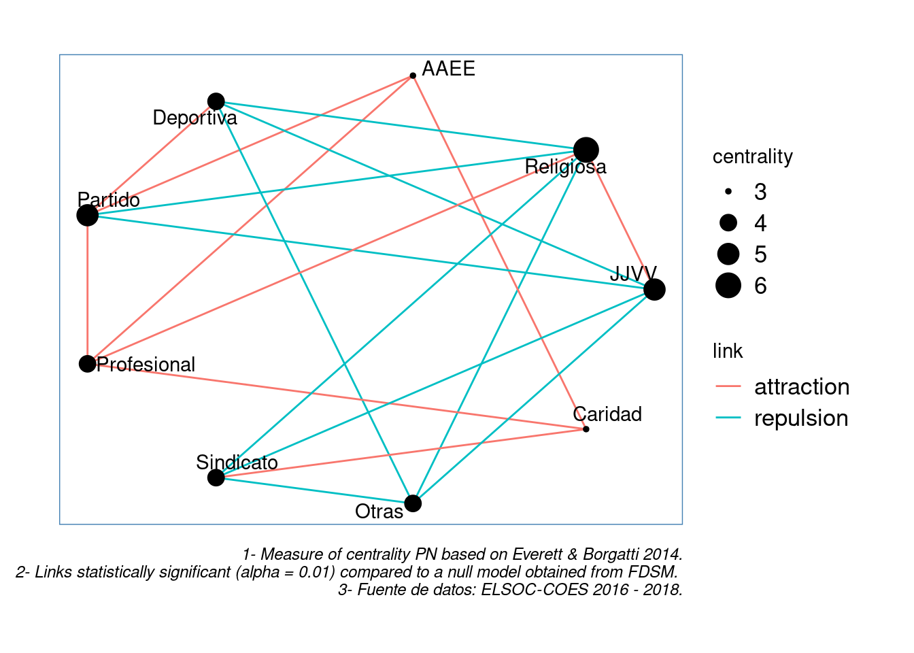
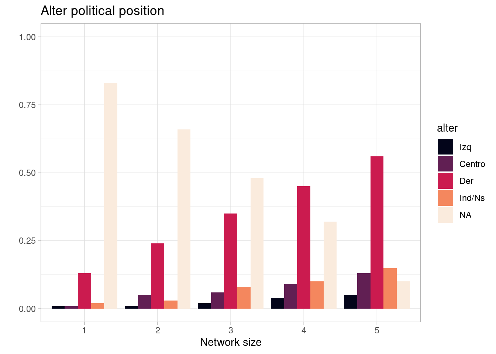
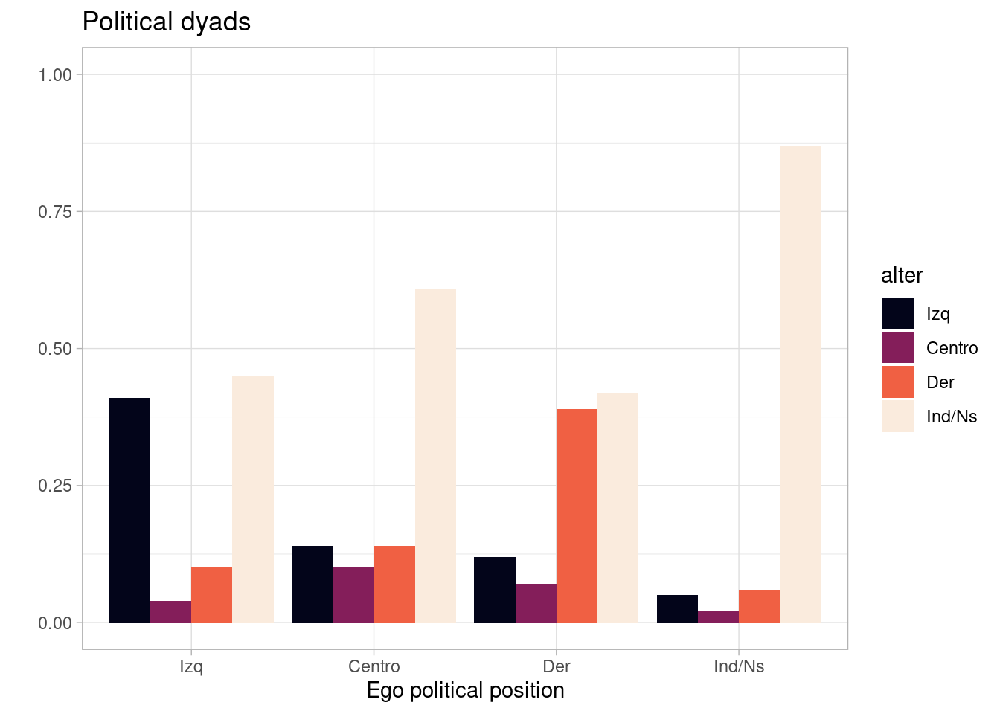
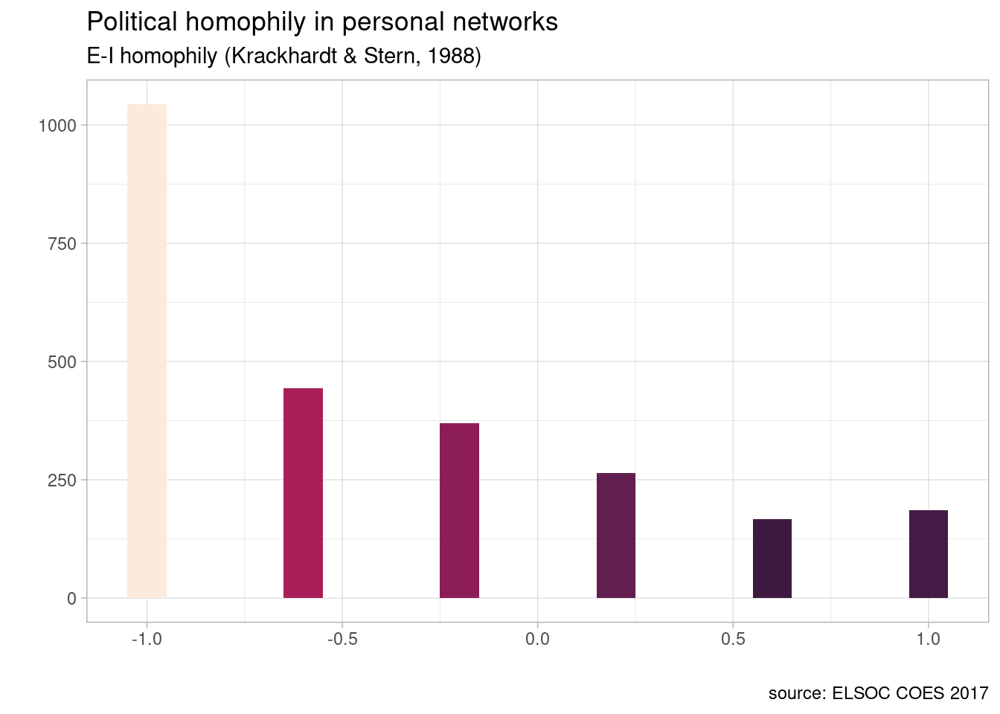

```{r, message=F}
pacman::p_load(intergraph,
tidyr,
tidygraph,
igraph,
network,
signnet,
sna,
ggplot2,
xlsx,
ggraph,
backbone,
dplyr,
readr,
extrafont,
kableExtra,
table1,
flextable,
tigerstats,
foreign,
xtable,
Hmisc,
memisc,
nnet,
lattice,
texreg,
httr
)
#unloadNamespace("expss")
```En el presente ejericio realizaremos dos ejericicios de análisis descriptivos de datos con la encuesta ELSOC 2016 y 2017. El ambos utlizan una perspectiva de redes. El primero de redes valuadas y el segundo de redes egocentradas.
1 Análisis I
1.1 Librerías
1.2 data
```{r}
#ELSOC 2016
url <- "https://github.com/rcantillan/ricantillan.rbind.io/raw/main/dat/ELSOC/ELSOC_W01_v4.01_R.RData"
response <- GET(url)
local_path <- "ELSOC_W01_v4.01_R.RData"
writeBin(response$content, local_path)
load("ELSOC_W01_v4.01_R.RData")
``````{r}
#elsoc_2016 <- elsoc_2016 %>%
# dplyr::mutate (JJVV = ifelse(c12_01>=2, 1, 0)) %>%
# dplyr::mutate (Religiosa = ifelse(c12_02>=2, 1, 0)) %>%
# dplyr::mutate (Partido = ifelse(c12_03>=2, 1, 0)) %>%
# dplyr::mutate (Deportiva = ifelse(c12_07>=2, 1, 0)) %>%
# dplyr::mutate (AAEE = ifelse(c12_08>=2, 1, 0)) %>%
# dplyr::mutate (Caridad = ifelse(c12_06>=2, 1, 0)) %>%
# dplyr::mutate (Sindicato = ifelse(c12_04>=2, 1, 0)) %>%
# dplyr::mutate (Profesional = ifelse(c12_05>=2, 1, 0)) %>%
# dplyr::mutate (Otras = ifelse(c12_09>=2, 1, 0))%>%
# dplyr::select (JJVV, Religiosa, AAEE, Deportiva, Partido,
# Profesional, Sindicato, Caridad, Otras)
elsoc_2016<-elsoc_2016%>%
mutate_at(vars(matches("c12")), ~ifelse(. < 2, 0, 1)) %>% # se reduce una línea.
dplyr::mutate (c02 = case_when(c02 == 1 ~ 1,
c02 == 2 ~ 0,
c02 == 3 ~ 1)) %>%
dplyr::mutate (mujer = case_when(m0_sexo == 1 ~ "hombre",
m0_sexo == 2 ~ "mujer")) %>%
dplyr::mutate (edad = case_when(m0_edad %in% 18:29 ~ "joven",
m0_edad %in% 30:65 ~ "adulto",
m0_edad %in% 66:88 ~ "adulto_mayor")) %>%
dplyr::mutate (nivel_educ = case_when(m01 %in% 1 :7 ~ "no_univers",
m01 %in% 8 :10 ~ "univers"))%>%
dplyr::select(JJVV=c12_01, Religiosa=c12_02, AAEE=c12_03, Deportiva=c12_04,
Partido=c12_05, Profesional=c12_06, Sindicato=c12_07, Caridad=c12_08,
Otras=c12_09, mujer,edad,nivel_educ)
```1.3 NA
```{r}
# set NA
elsoc_2016[elsoc_2016=="-999"] <- NA
elsoc_2016[elsoc_2016=="-888"] <- NA
# delete NA in covariable
elsoc_2016<-elsoc_2016 %>% drop_na(c("mujer", "edad", "nivel_educ"))
glimpse(elsoc_2016)
```Rows: 2,925
Columns: 12
$ JJVV <dbl> 1, 1, 1, 1, 0, 0, 1, 0, 0, 0, 0, 0, 0, 0, 1, 0, 0, 1, 1, 0…
$ Religiosa <dbl> 0, 0, 0, 0, 0, 0, 0, 0, 0, 0, 1, 1, 0, 0, 1, 0, 0, 0, 0, 0…
$ AAEE <dbl> 0, 0, 0, 0, 0, 0, 0, 0, 0, 0, 0, 0, 0, 0, 0, 0, 0, 0, 0, 0…
$ Deportiva <dbl> 1, 0, 0, 1, 0, 0, 0, 0, 0, 0, 0, 0, 0, 0, 0, 0, 0, 0, 0, 0…
$ Partido <dbl> 0, 1, 0, 0, 0, 0, 0, 0, 0, 0, 0, 0, 0, 1, 0, 0, 0, 0, 0, 0…
$ Profesional <dbl> 0, 0, 0, 0, 0, 0, 0, 0, 0, 1, 0, 0, 1, 1, 0, 0, 0, 0, 0, 0…
$ Sindicato <dbl> 0, 0, 0, 0, 0, 0, 0, 0, 0, 1, 0, 0, 1, 1, 0, 0, 0, 0, 0, 0…
$ Caridad <dbl> 0, 0, 0, 0, 0, 0, 0, 0, 0, 0, 0, 1, 0, 0, 0, 0, 0, 0, 0, 0…
$ Otras <dbl> 0, 0, 0, 1, 0, 0, 0, 0, 0, 0, 0, 0, 0, 0, 0, 0, 0, 0, 0, 0…
$ mujer <chr> "mujer", "mujer", "mujer", "hombre", "hombre", "hombre", "…
$ edad <chr> "adulto", "adulto", "joven", "adulto", "adulto_mayor", "ad…
$ nivel_educ <chr> "no_univers", "no_univers", "no_univers", "univers", "no_u…1.4 Sexo y asociaciones
```{r}
t1<-rowPerc(xtabs(~JJVV+mujer,data=elsoc_2016))
t2<-rowPerc(xtabs(~Religiosa+mujer,data=elsoc_2016))
t3<-rowPerc(xtabs(~Deportiva+mujer,data=elsoc_2016))
t4<-rowPerc(xtabs(~Caridad+mujer,data=elsoc_2016))
t5<-rowPerc(xtabs(~Partido+mujer,data=elsoc_2016))
t6<-rowPerc(xtabs(~Profesional+mujer,data=elsoc_2016))
t7<-rowPerc(xtabs(~Sindicato+mujer,data=elsoc_2016))
t8<-rowPerc(xtabs(~AAEE+mujer,data=elsoc_2016))
t9<-rowPerc(xtabs(~Otras+mujer,data=elsoc_2016))
a<-rbind(t1,t2,t3,t4,t5,t6,t7,t8,t9)
a<-as.data.frame(a)
a$part<-c(0,1,0,1,0,1,0,1,0,1,0,1,0,1,0,1,0,1)
a1<-a[a$part==1,]
a1$Tipo<-c("JJVV","Religiosa","Deportiva","Caridad","Partido","Profesional","Sindicato","AAEE","Otras")
a1<-a1%>%
dplyr::select(Tipo,hombre,mujer)
```1.5 nivel educativo y asociaciones
```{r}
t1<-rowPerc(xtabs(~JJVV+nivel_educ,data=elsoc_2016))
t2<-rowPerc(xtabs(~Religiosa+nivel_educ,data=elsoc_2016))
t3<-rowPerc(xtabs(~Deportiva+nivel_educ,data=elsoc_2016))
t4<-rowPerc(xtabs(~Caridad+nivel_educ,data=elsoc_2016))
t5<-rowPerc(xtabs(~Partido+nivel_educ,data=elsoc_2016))
t6<-rowPerc(xtabs(~Profesional+nivel_educ,data=elsoc_2016))
t7<-rowPerc(xtabs(~Sindicato+nivel_educ,data=elsoc_2016))
t8<-rowPerc(xtabs(~AAEE+nivel_educ,data=elsoc_2016))
t9<-rowPerc(xtabs(~Otras+nivel_educ,data=elsoc_2016))
a<-rbind(t1,t2,t3,t4,t5,t6,t7,t8,t9)
a<-as.data.frame(a)
a$part<-c(0,1,0,1,0,1,0,1,0,1,0,1,0,1,0,1,0,1)
a2<-a[a$part==1,]
a2<-a2%>%
dplyr::select("no universitario"=no_univers, "universitario"=univers)
```1.6 edad y asociaciones
```{r}
t1<-rowPerc(xtabs(~JJVV+edad,data=elsoc_2016))
t2<-rowPerc(xtabs(~Religiosa+edad,data=elsoc_2016))
t3<-rowPerc(xtabs(~Deportiva+edad,data=elsoc_2016))
t4<-rowPerc(xtabs(~Caridad+edad,data=elsoc_2016))
t5<-rowPerc(xtabs(~Partido+edad,data=elsoc_2016))
t6<-rowPerc(xtabs(~Profesional+edad,data=elsoc_2016))
t7<-rowPerc(xtabs(~Sindicato+edad,data=elsoc_2016))
t8<-rowPerc(xtabs(~AAEE+edad,data=elsoc_2016))
t9<-rowPerc(xtabs(~Otras+edad,data=elsoc_2016))
a<-rbind(t1,t2,t3,t4,t5,t6,t7,t8,t9)
a<-as.data.frame(a)
a$part<-c(0,1,0,1,0,1,0,1,0,1,0,1,0,1,0,1,0,1)
a3<-a[a$part==1,]
a3<-a3%>%
dplyr::select(joven, adulto, "adulto mayor"=adulto_mayor)
```1.7 tabla descriptiva de composición (incluye solo quienes informan participar)
```{r}
tabla1<-cbind(a1,a2,a3)
tabla1<-as.data.frame(tabla1)
tabla1<-tibble::rowid_to_column(tabla1, "id")
tabla1 %>%
kbl(caption = "Composición (%) de participantes en asociaciones voluntarias (ELSOC 2016)") %>%
kable_classic("hover", full_width = F)
```| id | Tipo | hombre | mujer | no universitario | universitario | joven | adulto | adulto mayor |
|---|---|---|---|---|---|---|---|---|
| 1 | JJVV | 32.43 | 67.57 | 86.44 | 13.56 | 7.59 | 74.73 | 17.68 |
| 2 | Religiosa | 32.17 | 67.83 | 84.67 | 15.33 | 12.17 | 69.13 | 18.70 |
| 3 | Deportiva | 52.15 | 47.85 | 78.55 | 21.45 | 16.17 | 78.55 | 5.28 |
| 4 | Caridad | 37.40 | 62.60 | 60.31 | 39.69 | 31.30 | 63.36 | 5.34 |
| 5 | Partido | 45.98 | 54.02 | 55.36 | 44.64 | 11.16 | 80.36 | 8.48 |
| 6 | Profesional | 36.56 | 63.44 | 71.90 | 28.10 | 11.78 | 71.60 | 16.62 |
| 7 | Sindicato | 64.52 | 35.48 | 74.94 | 25.06 | 24.81 | 67.49 | 7.69 |
| 8 | AAEE | 50.34 | 49.66 | 66.44 | 33.56 | 16.11 | 71.14 | 12.75 |
| 9 | Otras | 27.73 | 72.27 | 78.15 | 21.85 | 16.81 | 59.66 | 23.53 |
1.8 overlap
```{r}
asociaciones<-elsoc_2016%>%dplyr::select(JJVV, Religiosa, AAEE, Deportiva, Partido, Profesional,
Sindicato, Caridad, Otras)
#Transpose
asociaciones_t <-t(asociaciones)
#Proyección modo 1 (overlap)
overlap <- asociaciones_t%*%t(asociaciones_t)
overlap %>%
kbl(caption = "Overlap de asociaciones voluntarias (ELSOC 2016)") %>%
kable_classic("hover", full_width = F)
```| JJVV | Religiosa | AAEE | Deportiva | Partido | Profesional | Sindicato | Caridad | Otras | |
|---|---|---|---|---|---|---|---|---|---|
| JJVV | 922 | 471 | 85 | 118 | 87 | 170 | 153 | 56 | 49 |
| Religiosa | 471 | 920 | 74 | 109 | 85 | 185 | 138 | 67 | 45 |
| AAEE | 85 | 74 | 149 | 53 | 50 | 58 | 40 | 36 | 15 |
| Deportiva | 118 | 109 | 53 | 303 | 85 | 84 | 82 | 37 | 18 |
| Partido | 87 | 85 | 50 | 85 | 224 | 84 | 59 | 42 | 19 |
| Profesional | 170 | 185 | 58 | 84 | 84 | 331 | 100 | 61 | 33 |
| Sindicato | 153 | 138 | 40 | 82 | 59 | 100 | 403 | 60 | 21 |
| Caridad | 56 | 67 | 36 | 37 | 42 | 61 | 60 | 131 | 15 |
| Otras | 49 | 45 | 15 | 18 | 19 | 33 | 21 | 15 | 119 |
1.9 Backbone
```{r, message=FALSE}
fdsm <- fdsm(asociaciones_t, trials = 10000, alpha = 0.01, signed=TRUE, class="edgelist")
```
|
| | 0%
|
| | 1%
|
|= | 1%
|
|= | 2%
|
|== | 2%
|
|== | 3%
|
|== | 4%
|
|=== | 4%
|
|=== | 5%
|
|==== | 5%
|
|==== | 6%
|
|===== | 6%
|
|===== | 7%
|
|===== | 8%
|
|====== | 8%
|
|====== | 9%
|
|======= | 9%
|
|======= | 10%
|
|======= | 11%
|
|======== | 11%
|
|======== | 12%
|
|========= | 12%
|
|========= | 13%
|
|========= | 14%
|
|========== | 14%
|
|========== | 15%
|
|=========== | 15%
|
|=========== | 16%
|
|============ | 16%
|
|============ | 17%
|
|============ | 18%
|
|============= | 18%
|
|============= | 19%
|
|============== | 19%
|
|============== | 20%
|
|============== | 21%
|
|=============== | 21%
|
|=============== | 22%
|
|================ | 22%
|
|================ | 23%
|
|================ | 24%
|
|================= | 24%
|
|================= | 25%
|
|================== | 25%
|
|================== | 26%
|
|=================== | 26%
|
|=================== | 27%
|
|=================== | 28%
|
|==================== | 28%
|
|==================== | 29%
|
|===================== | 29%
|
|===================== | 30%
|
|===================== | 31%
|
|====================== | 31%
|
|====================== | 32%
|
|======================= | 32%
|
|======================= | 33%
|
|======================= | 34%
|
|======================== | 34%
|
|======================== | 35%
|
|========================= | 35%
|
|========================= | 36%
|
|========================== | 36%
|
|========================== | 37%
|
|========================== | 38%
|
|=========================== | 38%
|
|=========================== | 39%
|
|============================ | 39%
|
|============================ | 40%
|
|============================ | 41%
|
|============================= | 41%
|
|============================= | 42%
|
|============================== | 42%
|
|============================== | 43%
|
|============================== | 44%
|
|=============================== | 44%
|
|=============================== | 45%
|
|================================ | 45%
|
|================================ | 46%
|
|================================= | 46%
|
|================================= | 47%
|
|================================= | 48%
|
|================================== | 48%
|
|================================== | 49%
|
|=================================== | 49%
|
|=================================== | 50%
|
|=================================== | 51%
|
|==================================== | 51%
|
|==================================== | 52%
|
|===================================== | 52%
|
|===================================== | 53%
|
|===================================== | 54%
|
|====================================== | 54%
|
|====================================== | 55%
|
|======================================= | 55%
|
|======================================= | 56%
|
|======================================== | 56%
|
|======================================== | 57%
|
|======================================== | 58%
|
|========================================= | 58%
|
|========================================= | 59%
|
|========================================== | 59%
|
|========================================== | 60%
|
|========================================== | 61%
|
|=========================================== | 61%
|
|=========================================== | 62%
|
|============================================ | 62%
|
|============================================ | 63%
|
|============================================ | 64%
|
|============================================= | 64%
|
|============================================= | 65%
|
|============================================== | 65%
|
|============================================== | 66%
|
|=============================================== | 66%
|
|=============================================== | 67%
|
|=============================================== | 68%
|
|================================================ | 68%
|
|================================================ | 69%
|
|================================================= | 69%
|
|================================================= | 70%
|
|================================================= | 71%
|
|================================================== | 71%
|
|================================================== | 72%
|
|=================================================== | 72%
|
|=================================================== | 73%
|
|=================================================== | 74%
|
|==================================================== | 74%
|
|==================================================== | 75%
|
|===================================================== | 75%
|
|===================================================== | 76%
|
|====================================================== | 76%
|
|====================================================== | 77%
|
|====================================================== | 78%
|
|======================================================= | 78%
|
|======================================================= | 79%
|
|======================================================== | 79%
|
|======================================================== | 80%
|
|======================================================== | 81%
|
|========================================================= | 81%
|
|========================================================= | 82%
|
|========================================================== | 82%
|
|========================================================== | 83%
|
|========================================================== | 84%
|
|=========================================================== | 84%
|
|=========================================================== | 85%
|
|============================================================ | 85%
|
|============================================================ | 86%
|
|============================================================= | 86%
|
|============================================================= | 87%
|
|============================================================= | 88%
|
|============================================================== | 88%
|
|============================================================== | 89%
|
|=============================================================== | 89%
|
|=============================================================== | 90%
|
|=============================================================== | 91%
|
|================================================================ | 91%
|
|================================================================ | 92%
|
|================================================================= | 92%
|
|================================================================= | 93%
|
|================================================================= | 94%
|
|================================================================== | 94%
|
|================================================================== | 95%
|
|=================================================================== | 95%
|
|=================================================================== | 96%
|
|==================================================================== | 96%
|
|==================================================================== | 97%
|
|==================================================================== | 98%
|
|===================================================================== | 98%
|
|===================================================================== | 99%
|
|======================================================================| 99%
|
|======================================================================| 100%```{r}
fdsm %>%
kbl(caption = "edgelist asociaciones voluntarias (ELSOC 2016)") %>%
kable_classic("hover", full_width = F)
```| from | to | weight |
|---|---|---|
| JJVV | Religiosa | 1 |
| JJVV | Deportiva | -1 |
| JJVV | Partido | -1 |
| JJVV | Sindicato | -1 |
| JJVV | Otras | -1 |
| Religiosa | Deportiva | -1 |
| Religiosa | Partido | -1 |
| Religiosa | Profesional | 1 |
| Religiosa | Sindicato | -1 |
| Religiosa | Otras | -1 |
| AAEE | Partido | 1 |
| AAEE | Profesional | 1 |
| AAEE | Caridad | 1 |
| Deportiva | Partido | 1 |
| Deportiva | Otras | -1 |
| Partido | Profesional | 1 |
| Profesional | Caridad | 1 |
| Sindicato | Caridad | 1 |
| Sindicato | Otras | -1 |
1.10 plot de red.
```{r}
g <- graph_from_data_frame(fdsm, directed = F)
E(g)[E(g)$weight == "1"]$link <- "attraction"
E(g)[E(g)$weight == "-1"]$link <- "repulsion"
``````{r}
E(g)$link
#extrafont::font_import()
#extrafont::loadfonts()
# agregar atributos a la red
g$name <- "Red asociativa"
#g$name
V(g)$id <- 1:9
#V(g)$id
#V(g)$tipo
## Calcular degree signed "ratio": positive neighbors/(positive neighbors+negative neighbors)/
V(g)$centrality<-igraph::degree(g)
# Visualización de la red
ggraph(g, layout = "in_circle") +
theme_graph(background = "white",
base_family = "Helvetica",
foreground = 'steelblue',
fg_text_colour = 'white',
base_size = 11) +
geom_edge_link(aes(color = link)) +
geom_node_point(aes(size = centrality),alpha = 8) +
geom_node_text(aes(label = name), repel = T) +
# geom_edge_density(aes(fill = vinculo)) +
geom_edge_link(alpha = 0.001) +
theme(legend.text=element_text(size=13)) +
labs(caption = "1- Measure of centrality PN based on Everett & Borgatti 2014.
2- Links statistically significant (alpha = 0.01) compared to a null model obtained from FDSM.
3- Fuente de datos: ELSOC-COES 2016 - 2018.")
``` [1] "attraction" "repulsion" "repulsion" "repulsion" "repulsion"
[6] "repulsion" "repulsion" "attraction" "repulsion" "repulsion"
[11] "attraction" "attraction" "attraction" "attraction" "repulsion"
[16] "attraction" "attraction" "attraction" "repulsion" 
2 Análisis II
2.1 Data 2019
Procesamod s los datos y creamos el “Indice E-I” de Krackhardt y Stern (1988). Creamos los alteres como externos (con otras categorías distinta a la del ego) o como internos (misma categoría que el ego). Los valores de -1 implican perfecta homofilia y los valores de +1 corresponden a perfecta heterofilia.
\[ EI = \frac{E - I}{E + I} \]
2.2 datos
```{r}
url <- "https://github.com/rcantillan/ricantillan.rbind.io/raw/main/dat/ELSOC/ELSOC_W02_v3.00_R.RData"
response <- GET(url)
local_path <- "ELSOC_W02_v3.00_R.RData"
writeBin(response$content, local_path)
load("ELSOC_W02_v3.00_R.RData") #reemplazar por ruta local de descarga
```2.3 librerías
```{r}
library(expss)
library(car)
```2.4 Seleccionamos datos
```{r}
# Armar BBDD 2019
ego2017 <- elsoc_2017 %>%
dplyr::select(idencuesta,
sexo=m0_sexo,
sexoalter01=r13_sexo_01,
sexoalter02=r13_sexo_02,
sexoalter03=r13_sexo_03,
sexoalter04=r13_sexo_04,
sexoalter05=r13_sexo_05,
edad=m0_edad,
edadalter01=r13_edad_01,
edadalter02=r13_edad_02,
edadalter03=r13_edad_03,
edadalter04=r13_edad_04,
edadalter05=r13_edad_05,
relig=m38,
religalter01=r13_relig_01,
religalter02=r13_relig_02,
religalter03=r13_relig_03,
religalter04=r13_relig_04,
religalter05=r13_relig_05,
educ=m01,
educalter01=r13_educ_01,
educalter02=r13_educ_02,
educalter03=r13_educ_03,
educalter04=r13_educ_04,
educalter05=r13_educ_05,
ideol=c15,
ideolalter01=r13_ideol_01,
ideolalter02=r13_ideol_02,
ideolalter03=r13_ideol_03,
ideolalter04=r13_ideol_04,
ideolalter05=r13_ideol_05,
c08_01,
c08_02,
c08_03,
c08_04,
ponderador01)
```2.5 Set NA
```{r}
# Definir NA's
ego2017[ego2017=="-999"] <- NA
ego2017[ego2017=="-888"] <- NA
```2.6 Recode sexo
```{r}
sexolab<-c("hombre","mujer")
ego2017$sexo_h<-factor(Recode(ego2017$sexo,"1=1;2=2;-888=NA;-999=NA"),labels=sexolab)
ego2017$alterSexo1<-factor(Recode(ego2017$sexoalter01,"1=1;2=2;-888=NA;-999=NA"),labels=sexolab)
ego2017$alterSexo2<-factor(Recode(ego2017$sexoalter02,"1=1;2=2;-888=NA;-999=NA"),labels=sexolab)
ego2017$alterSexo3<-factor(Recode(ego2017$sexoalter03,"1=1;2=2;-888=NA;-999=NA"),labels=sexolab)
ego2017$alterSexo4<-factor(Recode(ego2017$sexoalter04,"1=1;2=2;-888=NA;-999=NA"),labels=sexolab)
ego2017$alterSexo5<-factor(Recode(ego2017$sexoalter05,"1=1;2=2;-888=NA;-999=NA"),labels=sexolab)
with(ego2017, summary(cbind(alterSexo1,alterSexo2,alterSexo3,alterSexo4,alterSexo5)))
``` alterSexo1 alterSexo2 alterSexo3 alterSexo4
Min. :1.000 Min. :1.000 Min. :1.000 Min. :1.000
1st Qu.:1.000 1st Qu.:1.000 1st Qu.:1.000 1st Qu.:1.000
Median :2.000 Median :2.000 Median :2.000 Median :2.000
Mean :1.617 Mean :1.583 Mean :1.552 Mean :1.546
3rd Qu.:2.000 3rd Qu.:2.000 3rd Qu.:2.000 3rd Qu.:2.000
Max. :2.000 Max. :2.000 Max. :2.000 Max. :2.000
NA's :1 NA's :372 NA's :864 NA's :1370
alterSexo5
Min. :1.000
1st Qu.:1.000
Median :2.000
Mean :1.557
3rd Qu.:2.000
Max. :2.000
NA's :1692 2.7 Recode edad
```{r}
edadlab <- c("18-24", "25-34", "35-44", "45-54", "55-64", ">65")
ego2017$edadR<-factor(Recode(ego2017$edad,"lo:24=1;25:34=2;35:44=3;45:54=4;55:64=5;65:hi=6"),labels=edadlab)
ego2017$alterAge1<-factor(Recode(ego2017$edadalter01,"lo:24=1;25:34=2;35:44=3;45:54=4;55:64=5;65:hi=6"),labels=edadlab)
ego2017$alterAge2<-factor(Recode(ego2017$edadalter02,"lo:24=1;25:34=2;35:44=3;45:54=4;55:64=5;65:hi=6"),labels=edadlab)
ego2017$alterAge3<-factor(Recode(ego2017$edadalter03,"lo:24=1;25:34=2;35:44=3;45:54=4;55:64=5;65:hi=6"),labels=edadlab)
ego2017$alterAge4<-factor(Recode(ego2017$edadalter04,"lo:24=1;25:34=2;35:44=3;45:54=4;55:64=5;65:hi=6"),labels=edadlab)
ego2017$alterAge5<-factor(Recode(ego2017$edadalter05,"lo:24=1;25:34=2;35:44=3;45:54=4;55:64=5;65:hi=6"),labels=edadlab)
with(ego2017, summary(cbind(alterAge1,alterAge2,alterAge3,alterAge4,alterAge5)))
``` alterAge1 alterAge2 alterAge3 alterAge4 alterAge5
Min. :1.000 Min. :1.000 Min. :1.000 Min. :1.000 Min. :1.00
1st Qu.:2.000 1st Qu.:2.000 1st Qu.:2.000 1st Qu.:2.000 1st Qu.:2.00
Median :4.000 Median :3.000 Median :3.000 Median :3.000 Median :3.00
Mean :3.607 Mean :3.376 Mean :3.328 Mean :3.312 Mean :3.37
3rd Qu.:5.000 3rd Qu.:5.000 3rd Qu.:5.000 3rd Qu.:5.000 3rd Qu.:5.00
Max. :6.000 Max. :6.000 Max. :6.000 Max. :6.000 Max. :6.00
NA's :1 NA's :372 NA's :864 NA's :1370 NA's :1692 2.8 Recode religión
```{r}
rellab = c("Catolico","Evangelico","Otra Religion","no religioso")
ego2017$religid<-factor(Recode(ego2017$relig,"1=1;2=2;3:6=3;7:9=4;-999:-888=4"),labels=rellab)
ego2017$alterRelig1<-factor(Recode(ego2017$religalter01,"1=1;2=2;3:4=4;5=3;-999:-888=4"),labels=rellab)
ego2017$alterRelig2<-factor(Recode(ego2017$religalter02,"1=1;2=2;3:4=4;5=3;-999:-888=4"),labels=rellab)
ego2017$alterRelig3<-factor(Recode(ego2017$religalter03,"1=1;2=2;3:4=4;5=3;-999:-888=4"),labels=rellab)
ego2017$alterRelig4<-factor(Recode(ego2017$religalter04,"1=1;2=2;3:4=4;5=3;-999:-888=4"),labels=rellab)
ego2017$alterRelig5<-factor(Recode(ego2017$religalter05,"1=1;2=2;3:4=4;5=3;-999:-888=4"),labels=rellab)
with(ego2017, summary(cbind(alterRelig1,alterRelig2,alterRelig3,alterRelig4,alterRelig5)))
``` alterRelig1 alterRelig2 alterRelig3 alterRelig4
Min. :1.000 Min. :1.000 Min. :1.000 Min. :1.000
1st Qu.:1.000 1st Qu.:1.000 1st Qu.:1.000 1st Qu.:1.000
Median :1.000 Median :1.000 Median :1.000 Median :1.000
Mean :1.747 Mean :1.762 Mean :1.836 Mean :1.784
3rd Qu.:2.000 3rd Qu.:2.000 3rd Qu.:2.000 3rd Qu.:2.000
Max. :4.000 Max. :4.000 Max. :4.000 Max. :4.000
NA's :1 NA's :372 NA's :864 NA's :1370
alterRelig5
Min. :1.000
1st Qu.:1.000
Median :1.000
Mean :1.809
3rd Qu.:2.000
Max. :4.000
NA's :1692 2.9 Recode posición política
```{r}
pollab <- c("Izq", "Centro", "Der", "Ind/Ninguno", "NA")
ego2017$izqderR<-factor(Recode(ego2017$ideol,"0:3=1;4:6=2;7:10=3;11:12=4;NA=5"),labels=pollab)
ego2017$alterPospol1=factor(Recode(ego2017$ideolalter01,"1:2=3;3=2;4:5=1;6=4;NA=5"),labels=pollab)
ego2017$alterPospol2=factor(Recode(ego2017$ideolalter02,"1:2=3;3=2;4:5=1;6=4;NA=5"),labels=pollab)
ego2017$alterPospol3=factor(Recode(ego2017$ideolalter03,"1:2=3;3=2;4:5=1;6=4;NA=5"),labels=pollab)
ego2017$alterPospol4=factor(Recode(ego2017$ideolalter04,"1:2=3;3=2;4:5=1;6=4;NA=5"),labels=pollab)
ego2017$alterPospol5=factor(Recode(ego2017$ideolalter05,"1:2=3;3=2;4:5=1;6=4;NA=5"),labels=pollab)
with(ego2017,summary(cbind(alterPospol1,alterPospol2,alterPospol3,alterPospol4,alterPospol5)))
``` alterPospol1 alterPospol2 alterPospol3 alterPospol4 alterPospol5
Min. :1.00 Min. :1.000 Min. :1.000 Min. :1.000 Min. :1.000
1st Qu.:3.00 1st Qu.:3.000 1st Qu.:4.000 1st Qu.:4.000 1st Qu.:4.000
Median :4.00 Median :4.000 Median :4.000 Median :5.000 Median :5.000
Mean :3.58 Mean :3.747 Mean :4.013 Mean :4.318 Mean :4.493
3rd Qu.:4.00 3rd Qu.:5.000 3rd Qu.:5.000 3rd Qu.:5.000 3rd Qu.:5.000
Max. :5.00 Max. :5.000 Max. :5.000 Max. :5.000 Max. :5.000 2.10 Recode nivel educativo
```{r}
edulab = c("Basica", "Media", "Sup. Tecnica", "Sup. Univ")
ego2017$educaF<-factor(Recode(ego2017$educ,"1:3=1;4:5=2;6:7=3;8:10=4;-888=NA;-999=NA"),labels=edulab)
ego2017$alterEduca1<-factor(Recode(ego2017$educalter01,"1=1;2:3=2;4=3;5=4;-888=NA;-999=NA"),labels=edulab)
ego2017$alterEduca2<-factor(Recode(ego2017$educalter02,"1=1;2:3=2;4=3;5=4;-888=NA;-999=NA"),labels=edulab)
ego2017$alterEduca3<-factor(Recode(ego2017$educalter03,"1=1;2:3=2;4=3;5=4;-888=NA;-999=NA"),labels=edulab)
ego2017$alterEduca4<-factor(Recode(ego2017$educalter04,"1=1;2:3=2;4=3;5=4;-888=NA;-999=NA"),labels=edulab)
ego2017$alterEduca5<-factor(Recode(ego2017$educalter05,"1=1;2:3=2;4=3;5=4;-888=NA;-999=NA"),labels=edulab)
with(ego2017, summary(cbind(alterEduca1,alterEduca2,alterEduca3,alterEduca4,alterEduca5)))
``` alterEduca1 alterEduca2 alterEduca3 alterEduca4
Min. :1.000 Min. :1.000 Min. :1.000 Min. :1.000
1st Qu.:2.000 1st Qu.:2.000 1st Qu.:2.000 1st Qu.:2.000
Median :2.000 Median :2.000 Median :2.000 Median :2.000
Mean :2.344 Mean :2.394 Mean :2.438 Mean :2.489
3rd Qu.:3.000 3rd Qu.:3.000 3rd Qu.:3.000 3rd Qu.:4.000
Max. :4.000 Max. :4.000 Max. :4.000 Max. :4.000
NA's :142 NA's :481 NA's :940 NA's :1412
alterEduca5
Min. :1.000
1st Qu.:2.000
Median :2.000
Mean :2.454
3rd Qu.:3.000
Max. :4.000
NA's :1724 2.11 Tamaño de la red
```{r}
ego2017$tamred = as.numeric(!is.na(ego2017$sexoalter01)) +
as.numeric(!is.na(ego2017$sexoalter02)) +
as.numeric(!is.na(ego2017$sexoalter03)) +
as.numeric(!is.na(ego2017$sexoalter04)) +
as.numeric(!is.na(ego2017$sexoalter05))
print(prop.table(table(ego2017$tamred)), 2)
```
0 1 2 3 4 5
0.0004 0.1500 0.1989 0.2046 0.1302 0.3158 ```{r}
ego2017$tamred[ego2017$tamred==0] <- NA
table(ego2017$tamred)
```
1 2 3 4 5
371 492 506 322 781 2.12 Posición política de alteres segun tamaño de la red de ego.
```{r}
ego2017$alterPospol1t<-Recode(ego2017$alterPospol1,"1:2=3;3=2;4:5=1;6:5=4")
ego2017$alterPospol2t<-Recode(ego2017$alterPospol2,"1:2=3;3=2;4:5=1;6:5=4")
ego2017$alterPospol3t<-Recode(ego2017$alterPospol3,"1:2=3;3=2;4:5=1;6:5=4")
ego2017$alterPospol4t<-Recode(ego2017$alterPospol4,"1:2=3;3=2;4:5=1;6:5=4")
ego2017$alterPospol5t<-Recode(ego2017$alterPospol5,"1:2=3;3=2;4:5=1;6:5=4")
Tpospol1=with(ego2017,table(tamred,alterPospol1t), na.rm=T)
Tpospol2=with(ego2017,table(tamred,alterPospol2t), na.rm=T)
Tpospol3=with(ego2017,table(tamred,alterPospol3t), na.rm=T)
Tpospol4=with(ego2017,table(tamred,alterPospol4t), na.rm=T)
Tpospol5=with(ego2017,table(tamred,alterPospol5t), na.rm=T)
Hpospol=Tpospol1+Tpospol2+Tpospol3+Tpospol4+Tpospol5
Hpospol=round(Hpospol, 0)
dimnames(Hpospol)=list(tamred= c("1", "2", "3", "4","5"),
alter = c("Izq", "Centro", "Der", "Ind/Ns", "NA"))
hom_tam<-as.data.frame(round(prop.table(Hpospol,1),2))
hom_tam%>%
drop_na()%>%
ggplot(aes(x = tamred, y = Freq, fill = alter, na.rm = TRUE), weight = ponderador01) +
geom_bar(position = 'dodge', stat = 'identity') +
labs(title = "Alter political position", x = "Network size", y = "") +
scale_fill_viridis_d(alpha = 1, begin = 0, end = 1, direction = 1, option = "F",) +
scale_y_continuous(limits = c(0, 1)) +
theme_light()
```
2.13 Homofilia por posición política
```{r}
library(car)
#rec
ego2017$izqderRx<-Recode(ego2017$ideol,"0:3=1;3:6=2;7:10=3;11:12=4;-999:-888=NA")
ego2017$alterPospol1x=Recode(ego2017$ideolalter01,"1:2=3;3=2;4:5=1;6=4;-999:-888=NA")
ego2017$alterPospol2x=Recode(ego2017$ideolalter02,"1:2=3;3=2;4:5=1;6=4;-999:-888=NA")
ego2017$alterPospol3x=Recode(ego2017$ideolalter03,"1:2=3;3=2;4:5=1;6=4;-999:-888=NA")
ego2017$alterPospol4x=Recode(ego2017$ideolalter04,"1:2=3;3=2;4:5=1;6=4;-999:-888=NA")
ego2017$alterPospol5x=Recode(ego2017$ideolalter05,"1:2=3;3=2;4:5=1;6=4;-999:-888=NA")
Tpospol1=with(ego2017,table(izqderRx,alterPospol1x))
Tpospol2=with(ego2017,table(izqderRx,alterPospol2x))
Tpospol3=with(ego2017,table(izqderRx,alterPospol3x))
Tpospol4=with(ego2017,table(izqderRx,alterPospol4x))
Tpospol5=with(ego2017,table(izqderRx,alterPospol5x))
Hpospol=Tpospol1+Tpospol2+Tpospol3+Tpospol4+Tpospol5
Hpospol=round(Hpospol, 0)
dimnames(Hpospol)=list(ego=c("Izq", "Centro", "Der", "Ind/Ns"),
alter=c("Izq", "Centro", "Der", "Ind/Ns"))
round(prop.table(Hpospol,1),2)
``` alter
ego Izq Centro Der Ind/Ns
Izq 0.41 0.04 0.10 0.45
Centro 0.14 0.10 0.14 0.61
Der 0.12 0.07 0.39 0.42
Ind/Ns 0.05 0.02 0.06 0.87```{r}
qq3<-as.data.frame(round(prop.table(Hpospol,1),2))
qq3%>%
ggplot(aes(x=ego, y=Freq, fill=alter), weight = ponderador01) +
geom_bar(position = 'dodge', stat='identity') +
labs(title="Political dyads", x="Ego political position", y="")+
scale_fill_viridis_d(alpha = 1, begin = 0, end = 1, direction = 1, option = "F",) +
scale_y_continuous(limits = c(0, 1))+
theme_light()
```
2.14 Indice E-I de Krackhardt y Stern (1988).
2.15 EI posición política
```{r}
ego2017$pospol_alt1_clasif<-ifelse(ego2017$izqderR==ego2017$alterPospol1,"External", "Internal")
ego2017$pospol_alt2_clasif<-ifelse(ego2017$izqderR==ego2017$alterPospol2,"External", "Internal")
ego2017$pospol_alt3_clasif<-ifelse(ego2017$izqderR==ego2017$alterPospol3,"External", "Internal")
ego2017$pospol_alt4_clasif<-ifelse(ego2017$izqderR==ego2017$alterPospol4,"External", "Internal")
ego2017$pospol_alt5_clasif<-ifelse(ego2017$izqderR==ego2017$alterPospol5,"External", "Internal")
#Ahora se agrega la información sobre los tipos de vínculos
ego2017$pospol_external<-count_row_if(criterion = "External",
ego2017$pospol_alt1_clasif,
ego2017$pospol_alt2_clasif,
ego2017$pospol_alt3_clasif,
ego2017$pospol_alt4_clasif,
ego2017$pospol_alt5_clasif)
ego2017$pospol_internal<-count_row_if(criterion = "Internal",
ego2017$pospol_alt1_clasif,
ego2017$pospol_alt2_clasif,
ego2017$pospol_alt3_clasif,
ego2017$pospol_alt4_clasif,
ego2017$pospol_alt5_clasif)
#Finalmente, calculamos el indicador EI
ego2017$EI_index_pospol<-(ego2017$pospol_external-ego2017$pospol_internal)/
(ego2017$pospol_external+ego2017$pospol_internal)
summary(ego2017$EI_index_pospol)
``` Min. 1st Qu. Median Mean 3rd Qu. Max.
-1.000 -1.000 -0.600 -0.423 -0.200 1.000 2.16 EI religión
```{r}
ego2017$alterRelig1_clasif<-ifelse(ego2017$religid==ego2017$alterRelig1,"External","Internal")
ego2017$alterRelig2_clasif<-ifelse(ego2017$religid==ego2017$alterRelig2,"External","Internal")
ego2017$alterRelig3_clasif<-ifelse(ego2017$religid==ego2017$alterRelig3,"External","Internal")
ego2017$alterRelig4_clasif<-ifelse(ego2017$religid==ego2017$alterRelig4,"External","Internal")
ego2017$alterRelig5_clasif<-ifelse(ego2017$religid==ego2017$alterRelig5,"External","Internal")
#Ahora se agrega la información sobre los tipos de vínculos
ego2017$relig_external<-count_row_if(criterion = "External",
ego2017$alterRelig1_clasif,
ego2017$alterRelig2_clasif,
ego2017$alterRelig3_clasif,
ego2017$alterRelig4_clasif,
ego2017$alterRelig5_clasif)
ego2017$relig_internal<-count_row_if(criterion = "Internal",
ego2017$alterRelig1_clasif,
ego2017$alterRelig2_clasif,
ego2017$alterRelig3_clasif,
ego2017$alterRelig4_clasif,
ego2017$alterRelig5_clasif)
#Finalmente, calculamos el indicador EI
ego2017$EI_index_relig<-(ego2017$relig_external-ego2017$relig_internal)/
(ego2017$relig_external+ego2017$relig_internal)
summary(ego2017$EI_index_relig)
``` Min. 1st Qu. Median Mean 3rd Qu. Max. NA's
-1.0000 -0.3333 0.6000 0.2776 1.0000 1.0000 8 2.17 EI educación
```{r}
ego2017$alterEduca1_clasif<-ifelse(ego2017$educaF==ego2017$alterEduca1,"External","Internal")
ego2017$alterEduca2_clasif<-ifelse(ego2017$educaF==ego2017$alterEduca2,"External","Internal")
ego2017$alterEduca3_clasif<-ifelse(ego2017$educaF==ego2017$alterEduca3,"External","Internal")
ego2017$alterEduca4_clasif<-ifelse(ego2017$educaF==ego2017$alterEduca4,"External","Internal")
ego2017$alterEduca5_clasif<-ifelse(ego2017$educaF==ego2017$alterEduca5,"External","Internal")
#Ahora se agrega la información sobre los tipos de vínculos
ego2017$educ_external<-count_row_if(criterion = "External",
ego2017$alterEduca1_clasif,
ego2017$alterEduca2_clasif,
ego2017$alterEduca3_clasif,
ego2017$alterEduca4_clasif,
ego2017$alterEduca5_clasif)
ego2017$educ_internal<-count_row_if(criterion = "Internal",
ego2017$alterEduca1_clasif,
ego2017$alterEduca2_clasif,
ego2017$alterEduca3_clasif,
ego2017$alterEduca4_clasif,
ego2017$alterEduca5_clasif)
#Finalmente, calculamos el indicador EI
ego2017$EI_index_educ<-(ego2017$educ_external-ego2017$educ_internal)/
(ego2017$educ_external+ego2017$educ_internal)
summary(ego2017$EI_index_educ)
``` Min. 1st Qu. Median Mean 3rd Qu. Max. NA's
-1.00000 -1.00000 0.00000 -0.03621 0.60000 1.00000 59 2.18 EI Sexo
```{r}
ego2017$alterSexo1_clasif<-ifelse(ego2017$sexo_h==ego2017$alterSexo1,"External","Internal")
ego2017$alterSexo2_clasif<-ifelse(ego2017$sexo_h==ego2017$alterSexo2,"External","Internal")
ego2017$alterSexo3_clasif<-ifelse(ego2017$sexo_h==ego2017$alterSexo3,"External","Internal")
ego2017$alterSexo4_clasif<-ifelse(ego2017$sexo_h==ego2017$alterSexo4,"External","Internal")
ego2017$alterSexo5_clasif<-ifelse(ego2017$sexo_h==ego2017$alterSexo5,"External","Internal")
#Ahora se agrega la información sobre los tipos de vínculos
ego2017$sexo_external<-count_row_if(criterion = "External",
ego2017$alterSexo1_clasif,
ego2017$alterSexo2_clasif,
ego2017$alterSexo3_clasif,
ego2017$alterSexo4_clasif,
ego2017$alterSexo5_clasif)
ego2017$sexo_internal<-count_row_if(criterion = "Internal",
ego2017$alterSexo1_clasif,
ego2017$alterSexo2_clasif,
ego2017$alterSexo3_clasif,
ego2017$alterSexo4_clasif,
ego2017$alterSexo5_clasif)
#Finalmente, calculamos el indicador EI
ego2017$EI_index_sexo<-(ego2017$sexo_external-ego2017$sexo_internal)/
(ego2017$sexo_external+ego2017$sexo_internal)
summary(ego2017$EI_index_sexo)
``` Min. 1st Qu. Median Mean 3rd Qu. Max. NA's
-1.0000 -0.2000 0.3333 0.2583 1.0000 1.0000 1 2.19 EI edad
```{r}
ego2017$alterAge1_clasif<-ifelse(ego2017$edadR==ego2017$alterAge1,"External","Internal")
ego2017$alterAge2_clasif<-ifelse(ego2017$edadR==ego2017$alterAge2,"External","Internal")
ego2017$alterAge3_clasif<-ifelse(ego2017$edadR==ego2017$alterAge3,"External","Internal")
ego2017$alterAge4_clasif<-ifelse(ego2017$edadR==ego2017$alterAge4,"External","Internal")
ego2017$alterAge5_clasif<-ifelse(ego2017$edadR==ego2017$alterAge5,"External","Internal")
#Ahora se agrega la información sobre los tipos de vínculos
ego2017$age_external<-count_row_if(criterion = "External",
ego2017$alterAge1_clasif,
ego2017$alterAge2_clasif,
ego2017$alterAge3_clasif,
ego2017$alterAge4_clasif,
ego2017$alterAge5_clasif)
ego2017$age_internal<-count_row_if(criterion = "Internal",
ego2017$alterAge1_clasif,
ego2017$alterAge2_clasif,
ego2017$alterAge3_clasif,
ego2017$alterAge4_clasif,
ego2017$alterAge5_clasif)
#Finalmente, calculamos el indicador EI
ego2017$EI_index_age<-(abs(ego2017$age_external-ego2017$age_internal)/
(ego2017$age_external+ego2017$age_internal))
summary(ego2017$EI_index_age)
``` Min. 1st Qu. Median Mean 3rd Qu. Max. NA's
0.0000 0.3333 0.6000 0.6177 1.0000 1.0000 1 ```{r}
## Ploteamos
ggplot(data = ego2017) +
geom_histogram(mapping = aes(x = EI_index_pospol, fill = ..count..),
binwidth = 0.1,
weight = "ponderador01") +
scale_fill_viridis_c(direction = 1, option = "F", guide = FALSE) +
labs(title = "Political homophily in personal networks",
subtitle = "E-I homophily (Krackhardt & Stern, 1988)",
caption = "source: ELSOC COES 2017",
x = "",
y = "") +
theme_light()
```